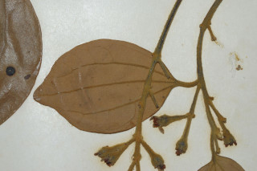
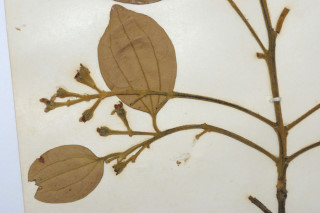
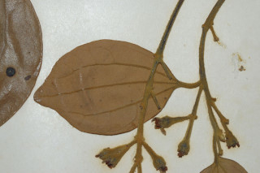
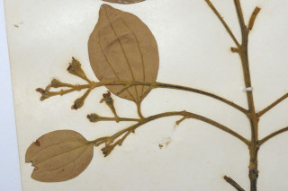

Images :

 



| Habit : | Tree , up to 8 m tall. |
| Leaves : | Leaves simple , opposite to subopposite ; petiole 1-3.5 cm, tomentose ; lamina 6-11 x 2.5-5.5 cm, broadly elliptic-ovate , apex abruptly shortly acuminate with broad acumen , base acute to rounded , young leaves dense fulvous tomentose , glabrous later, paler beneath, coriaceous ; trinerved basal or suprabasal , laterals reaching nearly to leaf apex ; tertiary_nerves horizontally_percurrent ; higher order nerves minutely reticulate . |
| Inflorescence / Flower : | Inflorescence axillary panicles , few flowered, minutely tomentulous . |
| Fruit and Seed : | Berry , ellipsoid ; fruiting_perianth_cup densely wooly; seed 1. |